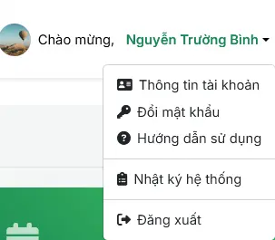
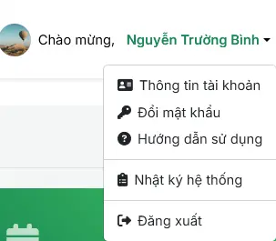
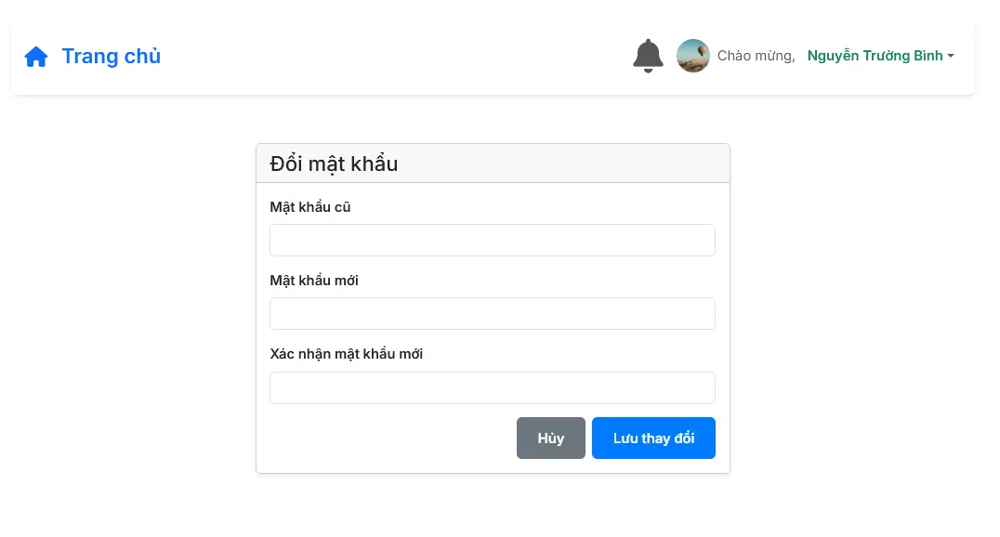
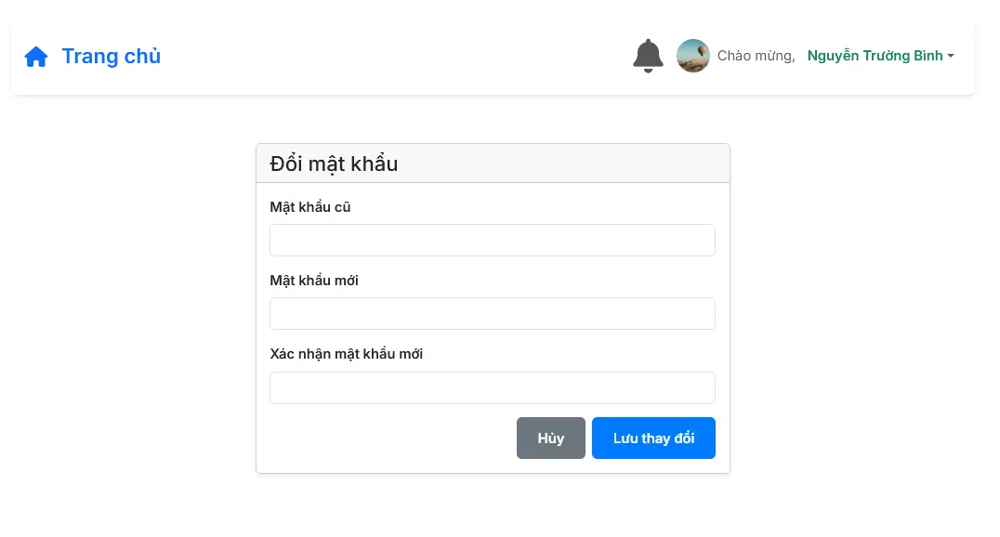

Hướng Dẫn Sử Dụng (Admin)
Tài liệu này cung cấp toàn bộ hướng dẫn về các tính năng dành cho tài khoản Quản trị viên.
1. Các Chức Năng Chung
Đăng nhập & Menu tài khoản
Sử dụng Mã số nhân viên và Mật khẩu để truy cập. Sau khi đăng nhập, menu ở góc trên bên phải cho phép truy cập nhanh các tính năng:
- Thông tin tài khoản: Xem và chỉnh sửa thông tin cá nhân.
- Đổi mật khẩu: Thay đổi mật khẩu đăng nhập.
- Nhật ký hệ thống: (Admin) Xem lại các hoạt động quan trọng trên hệ thống.
- Đăng xuất: Thoát khỏi phiên làm việc.
 

Trang thông tin tài khoản & Đổi mật khẩu
Mọi người dùng đều có thể truy cập trang Thông tin tài khoản của mình để xem các thông tin như Mã NV, Chức vụ, Bộ phận. Tại đây, bạn có thể nhấn "Chỉnh sửa" để cập nhật thông tin hoặc "Đổi mật khẩu".
 

2. Màn Hình Chính (Dashboard)
Đây là trang tổng quan, cung cấp cái nhìn toàn cảnh về tình hình nghỉ phép và đơn từ trong toàn công ty.
- Thống kê ngày phép: Các thẻ số liệu hiển thị tổng số ngày phép được hưởng, đã nghỉ và còn lại của toàn bộ nhân viên trong năm.
- Tổng quan Đơn từ: Thống kê nhanh số lượng đơn theo từng trạng thái (Chờ duyệt, Đã duyệt, Từ chối, Đã hủy).
- Biểu đồ & Truy cập nhanh: Trực quan hóa dữ liệu và cung cấp lối tắt đến các đơn quan trọng.

3. Quản Lý Nhân Viên
Admin có toàn quyền quản lý tài khoản người dùng trong hệ thống.
Thêm, Sửa, Xóa và Phân quyền
- Thêm người dùng: Nhấn nút "+ Thêm người dùng" để mở form nhập thông tin và phân vai trò.
- Chỉnh sửa & Xóa: Sử dụng các nút thao tác ở cuối mỗi hàng để cập nhật hoặc xóa người dùng.
- Phân quyền: Lọc người dùng theo vai trò (Quản trị viên, Quản lý cấp cao, Người dùng).
Thùng rác (Chức năng Admin)
Khi một tài khoản bị xóa, nó sẽ được chuyển vào Thùng rác thay vì xóa vĩnh viễn ngay lập tức. Chỉ Admin mới có thể truy cập khu vực này.
- Truy cập Thùng rác từ màn hình Quản lý nhân viên.
- Tại đây, Admin có thể khôi phục lại tài khoản đã xóa hoặc xóa vĩnh viễn khỏi hệ thống.
4. Quản Lý Đơn Nghỉ Phép
Là Admin, bạn có thể xem và quản lý tất cả các đơn xin nghỉ phép của toàn bộ công ty.
- Lọc & Tìm kiếm: Sử dụng bộ lọc trạng thái và ô tìm kiếm để nhanh chóng tìm thấy đơn cần xử lý.
- Xử lý đơn: Thực hiện các hành động trực tiếp trên danh sách như xem chi tiết, duyệt, từ chối...
- Xuất Excel: Tải về file báo cáo danh sách đơn nghỉ phép đã được lọc.

5. Quản lý Gói Dịch vụ
Đây là module hoàn toàn mới, một công cụ không thể thiếu cho việc vận hành. Hệ thống cho phép theo dõi vòng đời của các gói đăng ký (tên miền, hosting, bản quyền phần mềm,...), tự động cảnh báo khi sắp hết hạn.
- Theo dõi tập trung: Tất cả các dịch vụ và ngày hết hạn được hiển thị trên một giao diện duy nhất, sắp xếp theo thời gian hết hạn gần nhất.
- Cảnh báo tự động: Hệ thống tự động gửi email và tin nhắn Telegram hàng ngày để cảnh báo về các dịch vụ sắp hết hạn, giúp đảm bảo dịch vụ không bị gián đoạn.
- Nhập/Xuất Excel: Dễ dàng thêm hàng loạt dịch vụ từ file Excel hoặc xuất danh sách hiện tại ra báo cáo.
6. Tính Năng Nâng Cao (Admin)
Nhật ký hệ thống (Audit Log)
Đây là một công cụ mạnh mẽ dành riêng cho Admin, cho phép theo dõi và truy vết mọi hành động diễn ra trên hệ thống. Mỗi hành động như tạo đơn, duyệt đơn, đăng nhập... đều được ghi lại chi tiết.
- Người thực hiện: Ghi lại ID của người dùng đã thực hiện hành động.
- Hành động & Đối tượng: Mô tả rõ hành động (ví dụ: `CREATE_LEAVE_REQUEST`) và đối tượng bị tác động.
- Tìm kiếm & Lọc: Admin có thể tìm kiếm theo ID người dùng hoặc lọc theo loại hành động để phục vụ cho việc kiểm tra, rà soát khi cần thiết.
Tình trạng hệ thống
Trang này cho phép Admin theo dõi "sức khỏe" của các dịch vụ (microservices) cấu thành nên hệ thống. Hệ thống tự động kiểm tra và hiển thị trạng thái (Online/Offline/Error) của các dịch vụ liên quan với tần suất làm mới **15 giây/lần**.
7. Tổng kết & Lịch sử thay đổi (Changelog)
Dưới đây là tóm tắt các tính năng chính và công nghệ đã được triển khai trong hệ thống. Phiên bản: V2.0.0 - 19/08/2025.
Kiến trúc & Hạ tầng
- Kiến trúc Microservice: Hệ thống được xây dựng dựa trên 5 service backend độc lập và 1 service frontend, quản lý bởi Docker.
- Chuyển đổi CSDL: Tự động di dời dữ liệu từ SQLite sang PostgreSQL khi khởi động.
- Giám sát sức khỏe: API Gateway tự động kiểm tra tình trạng của các service con mỗi 15 giây.
Xác thực & Phân quyền
- Xác thực JWT: Hệ thống sử dụng JWT để xác thực người dùng an toàn.
- Quản lý phiên làm việc: Token có thời hạn 8 giờ và có cơ chế gia hạn phiên.
- Phân quyền theo vai trò: Hỗ trợ 3 cấp độ: Admin, SuperUser, và User.
Tính năng Chính
- Quản lý Nhân viên: Hỗ trợ đầy đủ các thao tác CRUD (Thêm, Sửa, Xóa mềm), tìm kiếm, lọc, quản lý thùng rác và khôi phục tài khoản.
- Quản lý Đơn xin phép: Người dùng có thể tạo và quản lý đơn. Cấp quản lý có thể xem và duyệt đơn.
- Quản lý Gói Dịch vụ: Theo dõi vòng đời các gói đăng ký (tên miền, hosting,...) và tự động cảnh báo qua Email/Telegram khi sắp hết hạn.
- Hệ thống Thông báo: Gửi thông báo theo thời gian thực tới đúng đối tượng dựa trên vai trò và bộ phận.
- Nhật ký hệ thống: Ghi lại mọi hoạt động quan trọng, chỉ Admin có thể xem và truy vết.
- Xuất file Excel: Cho phép xuất danh sách nhân viên và đơn xin phép ra file Excel, có áp dụng bộ lọc.
Giao diện Người dùng
- Giao diện web: Xây dựng bằng ReactJS, cung cấp trải nghiệm người dùng hiện đại với skeleton loader.
- Hướng dẫn sử dụng (GuideHelp): Tích hợp sẵn các chỉ dẫn cho từng vai trò người dùng.